I used a pretrained model to edit photos and make illusions in Part A. In Part B, I trained smaller UNets on handwritten digits.
Part A: Exploring a Pretrained Flow Model
I used PixNerd at 512 × 512 resolution. For sampling, I used Euler steps of 0.02. The guided experiments use weight 7 and an empty prompt for the unconditional prediction. My base seed was 180.
1.1 Noisy Training Inputs
I cropped my building photo to a square and mixed it with Gaussian noise: xₜ = (1 − t)ε + tx₁. I reused the same noise at all three times. Larger t keeps more of the original image.
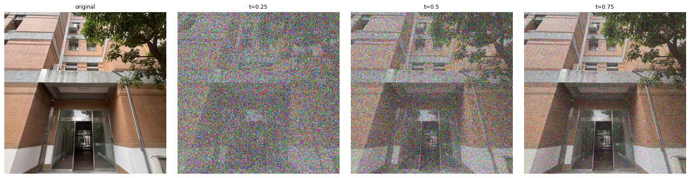
1.2 Gaussian Denoising
I divided each noisy image by t to restore its brightness, then tried Gaussian blur with σ = 1, 2, 4, 8, and 16. I kept the result with the lowest MSE against the original. Stronger blur removes more noise, but also wipes out the building details.
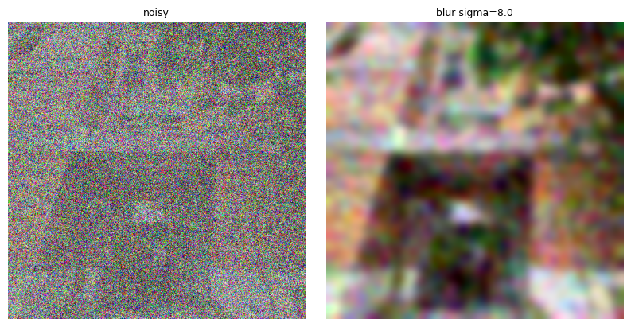
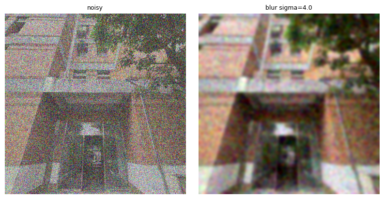
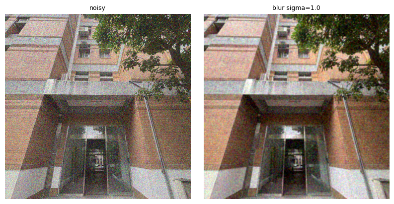
1.3 One-Step Denoising
I used xₜ + (1 − t)vθ(xₜ, t) with the prompt “a high quality photo.” At t = 0.25, the entrance looks smooth and distorted. At higher times, the result keeps more of the original structure.
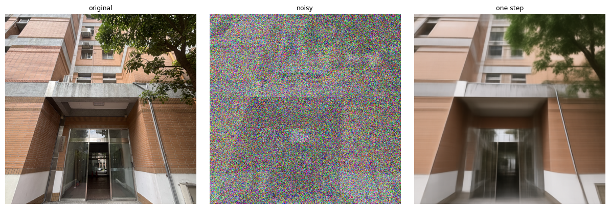
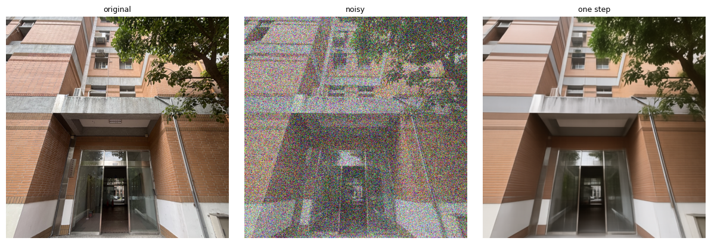
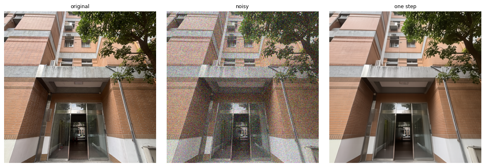
1.4 Visualizing Velocity
I compared the predicted update with the true update x₁ − xₜ. Gray means zero in both update images, and all rows use the same scales. The RGB RMS error is larger around edges and tree branches, especially at t = 0.25.
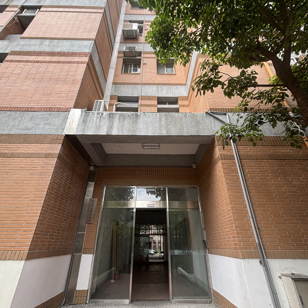
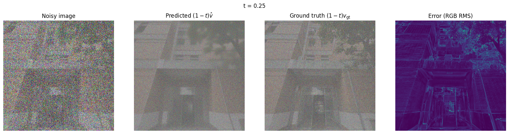
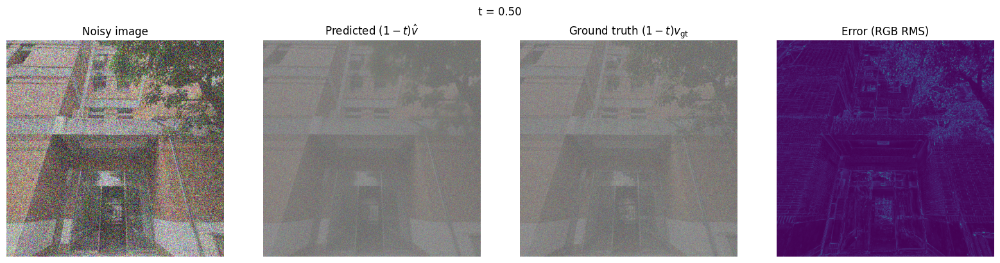
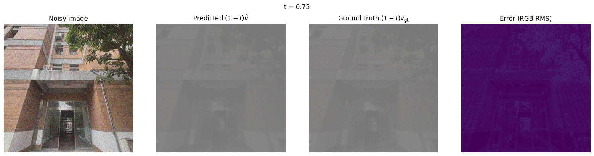
1.5 Euler Denoising
Starting from t = 0.50, I took 25 updates and recomputed the velocity each time. The sequence below shows the initial state and every fifth update. Euler keeps sharper edges than one-step denoising, although it also changes some details.
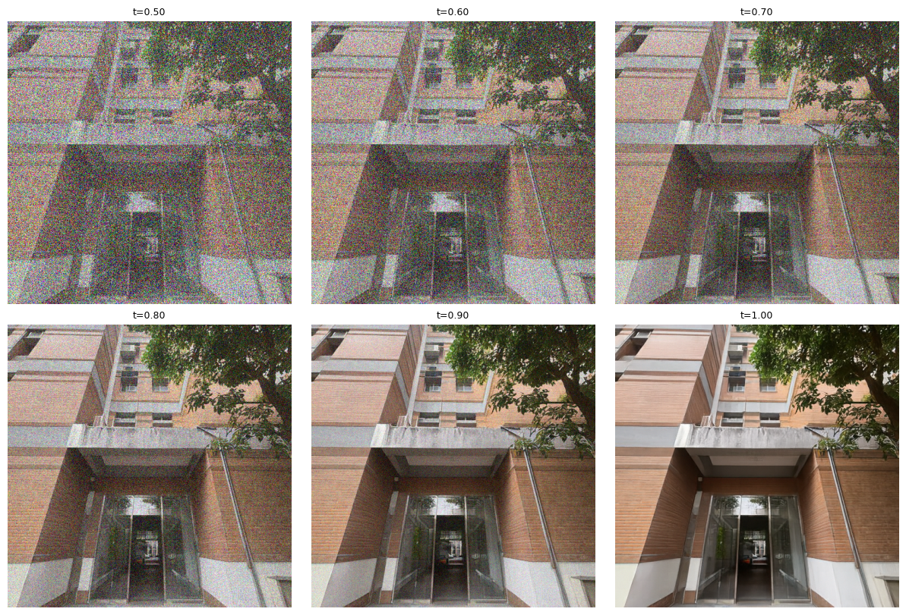
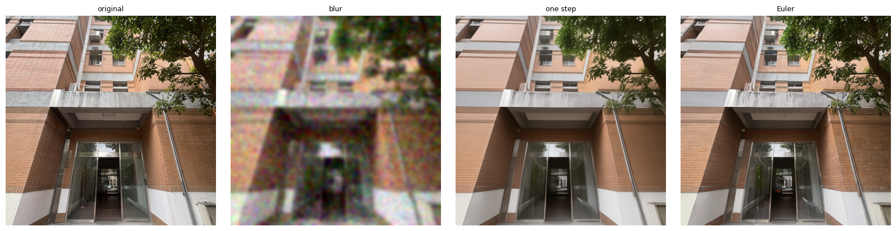
The MSEs were 0.04478 for blur, 0.01653 for one-step, and 0.01900 for Euler. Euler looks sharper here, but one-step stays closer to the original by this pixel-based measure.
1.6 Generating from Noise
I started from pure noise and sampled with “a high quality photo.” All five outputs are portraits. Some faces and bodies are distorted, so the generic prompt seems to favor people without reliably producing a clean photo.

2.1 Classifier-Free Guidance
I combined the velocities as v꜀ + 7(v꜀ − vᵤ) and reused the same five noise seeds. The guided faces are much more coherent, but the framing and smooth portrait style are also more similar across the images.

3.1 Image-to-Image Editing
I mixed each input with noise, then sampled with “a high quality photo.” Every grid uses starting times 0.02, 0.04, 0.06, 0.10, 0.14, 0.25, and 0.50. Smaller times leave less of the input and allow bigger changes.
Campanile
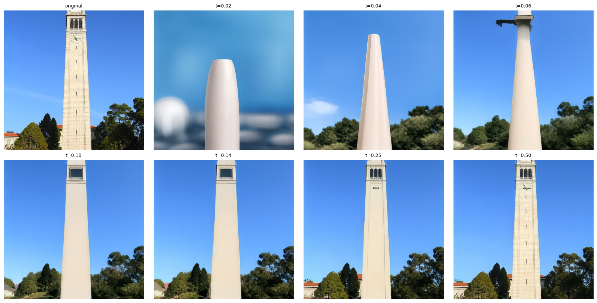
My building photo
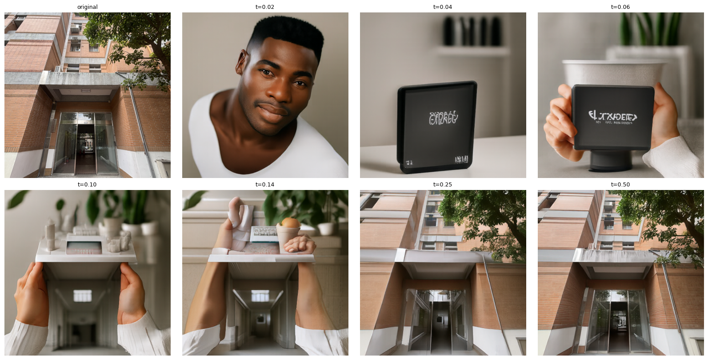
My cow photo
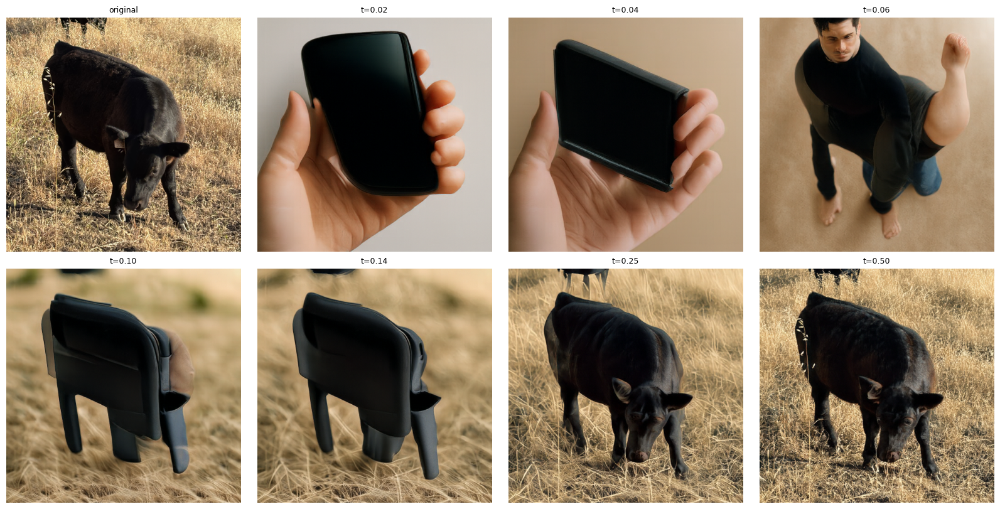
At low times, the building becomes unrelated portraits or objects, and the cow turns into dark objects with a similar shape. At t = 0.25 and 0.50, both inputs become recognizable again. The Campanile keeps its tall silhouette even when its details change.
Web Image and My Drawings
I used a downloaded bedroom image and my own house and flower drawings with the same seven starting times.
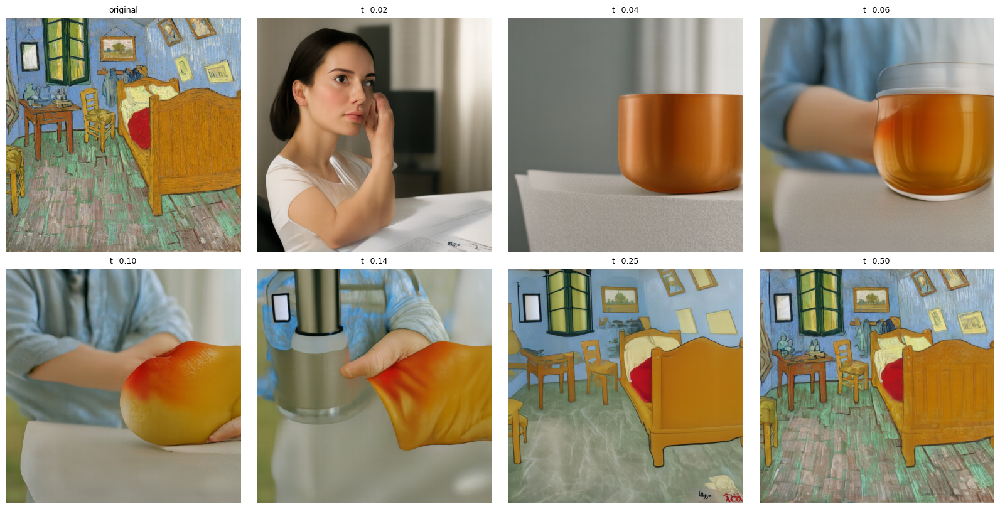
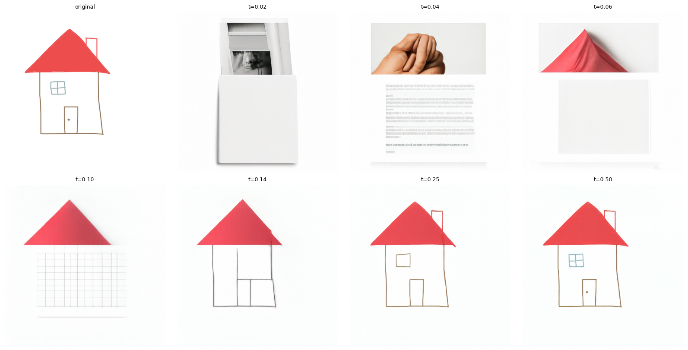
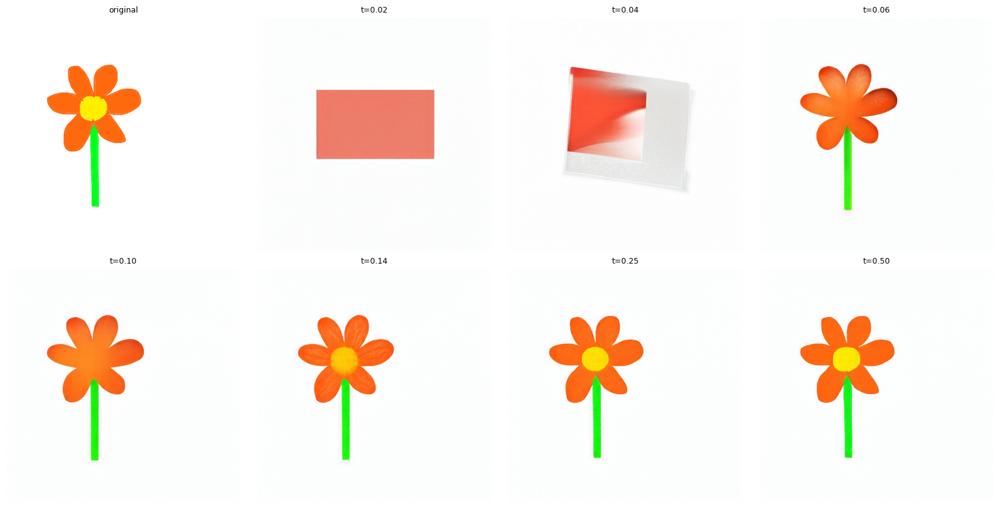
At low times, the bedroom turns into unrelated photos; by t = 0.25, the room layout comes back. The red roof survives earlier than the house details. The flower is recognizable by t = 0.06 and gains some shading around t = 0.14, while higher times stay close to my drawing.
3.2 Text-Guided Editing
I kept the same images, noise seed, and starting times, but replaced the generic prompt with a description of the edit I wanted.
Campanile → lighthouse
Prompt: “a photograph of a tall white lighthouse beside the ocean.”
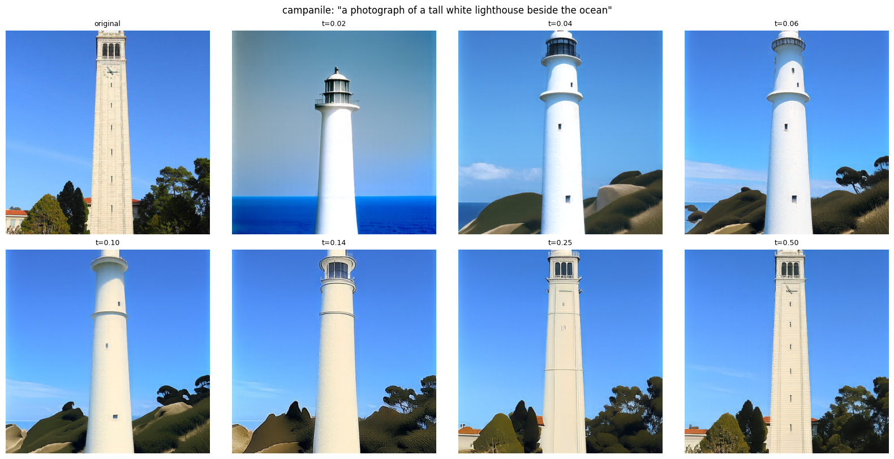
Building → castle
Prompt: “a photograph of a medieval stone castle entrance.”
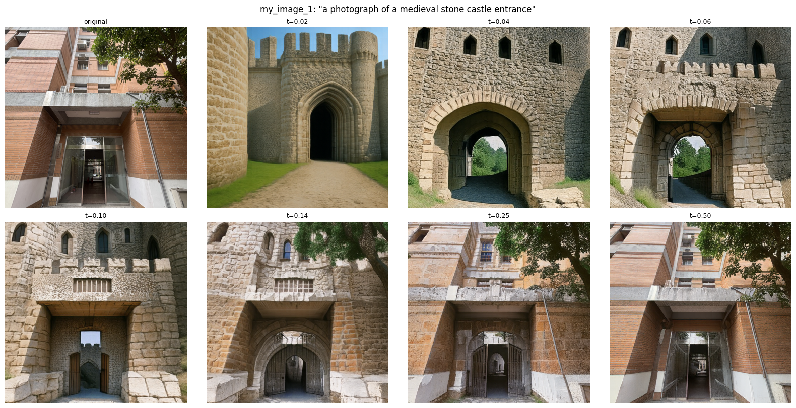
Cow → white cow in wildflowers
Prompt: “a photograph of a white cow grazing in a field of wildflowers.”
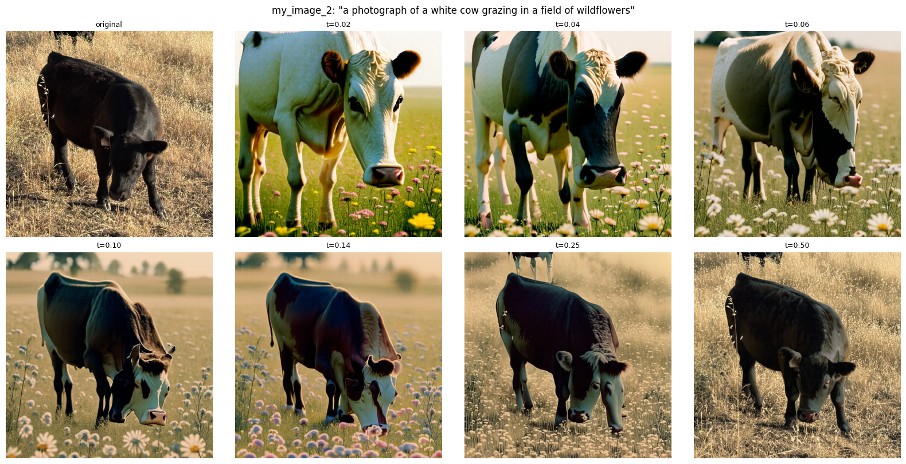
The prompts have the strongest effect at low starting times: the tower becomes a lighthouse, the entrance turns to stone, and the cow becomes lighter with flowers around it. At t = 0.14, the edits keep more of the original framing. At t = 0.50, the results mostly preserve the original photos.
3.3 Visual Anagrams
At each step, I predicted one velocity upright and another after rotating the image 180°. I rotated the second velocity back and averaged them before the Euler update.
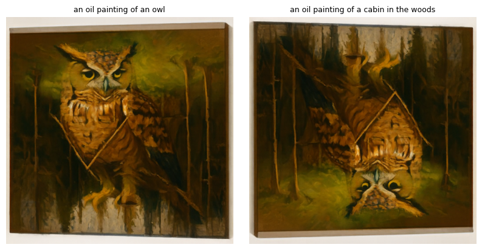
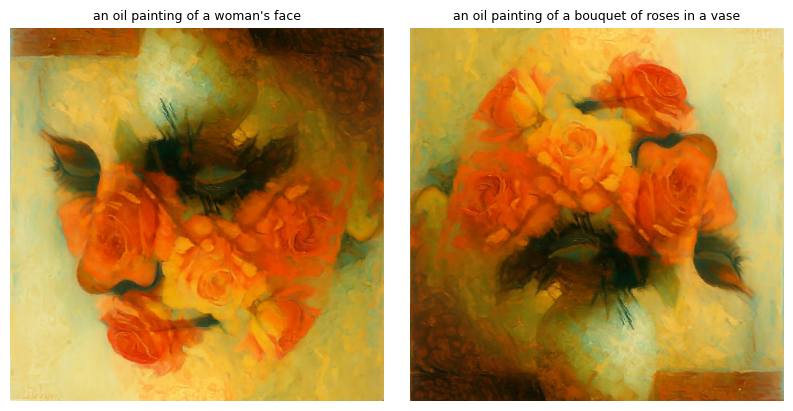
The face/roses pair works better for me. The roses become facial features upright and a bouquet upside down. The owl is clear in the other pair, but its eyes are still noticeable when I try to see the cabin.
3.4 Hybrid Images
I combined low frequencies from one guided velocity with high frequencies from the other. I used a Gaussian with σ = 16 and kernel size 265. The small views make the low-frequency shapes easier to see.
Lion / Sunflower
Close prompt: “a lithograph of a sunflower, close-up.” Distant prompt: “a lithograph of a lion's face, front view.”

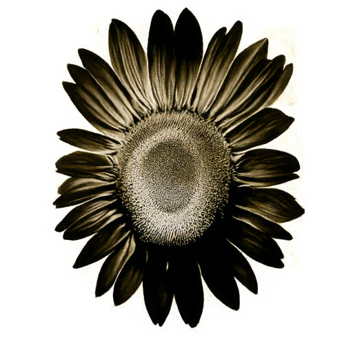

Butterfly / Flowers
Close prompt: “a lithograph of a field of flowers.” Distant prompt: “a lithograph of a butterfly.”

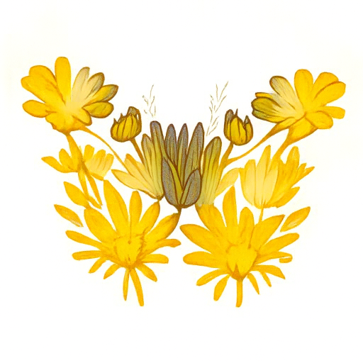

The sunflower is clear up close, while the lion’s face is much subtler. The second image keeps flower details up close and forms a butterfly-like shape from farther away.
Part B: Flow Matching from Scratch
I trained on the MNIST training split and used the test split for denoising examples. Pixels stay in [0, 1], and I draw fresh noise for each training batch.
1.1 Building the UNet
My UNet downsamples 28 × 28 images to 14 × 14 and 7 × 7, then upsamples back to 28 × 28. Skip connections concatenate the earlier features into the upsampling path. Each convolution block uses batch normalization and GELU.
1.2 Adding Noise
I added Gaussian noise with z = x + σε. I kept the digit and noise fixed while changing σ, so the increasing corruption is easy to compare.
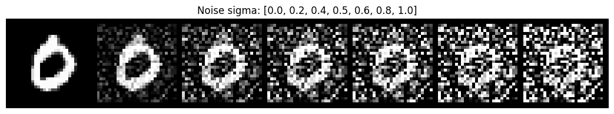
1.2.1 Training a Denoiser
I trained with σ = 0.5 for 5 epochs, using D = 128, batch size 256, Adam, and learning rate 0.0001. The loss drops quickly, then improves more slowly. Most digits are readable after one epoch; by epoch 5, their outlines are a little cleaner.
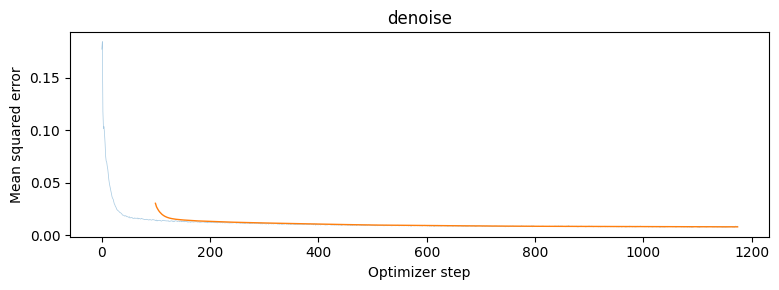
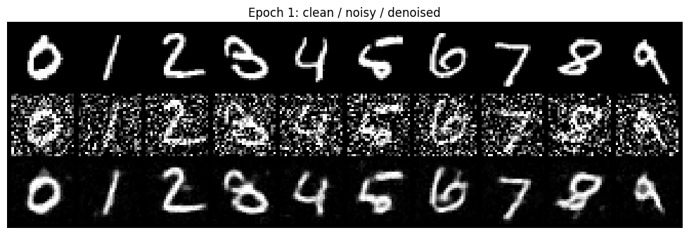
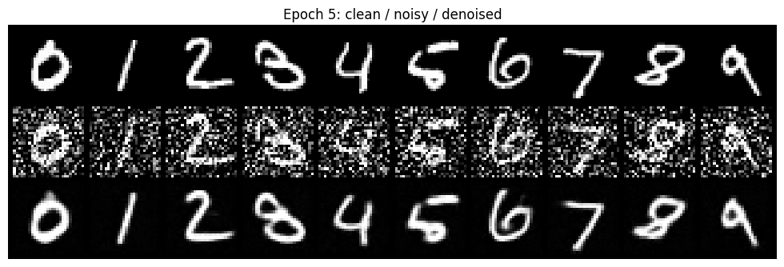
1.2.2 Testing Other Noise Levels
I tested the same zero at every noise level. The model still removes most noise outside its training level of 0.5. At σ = 1.0, the outline becomes distorted and extra marks remain.
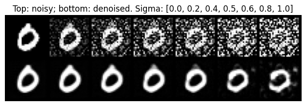
1.2.3 Denoising Pure Noise
I trained a fresh model with the same settings, but used noise that was independent of each target digit. The outputs all look like a similar blurry, overlapping digit shape, even after five epochs. There is no information in the input about which digit to predict, so minimizing MSE pushes the model toward the average training image instead of a distinct digit.
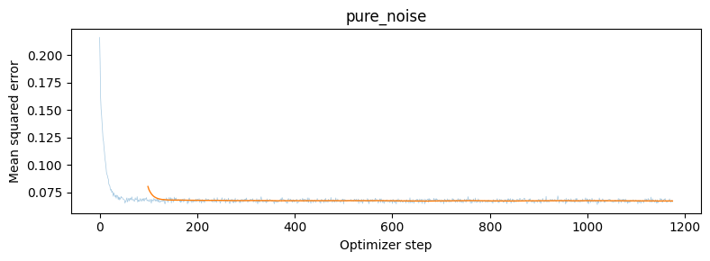
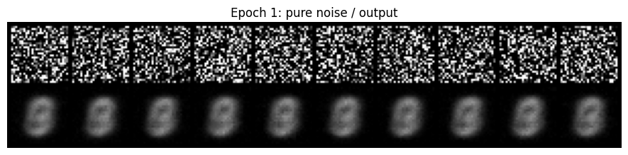
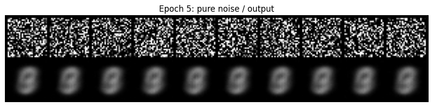
2.1 Time Conditioning
I added two fully connected blocks that embed t and multiply the features after unflattening and the first upsampling block. The model predicts velocity x₁ − x₀ from xₜ = (1 − t)x₀ + tx₁, rather than directly predicting a clean digit.
2.2 Training the Time-Conditioned Model
I used D = 64, batch size 64, and Adam for 10 epochs. The learning rate starts at 0.01 and is multiplied by 0.1^(1/10) after each epoch. Each image gets a random time in [0, 1] and fresh Gaussian noise.
2.3 Sampling with Time Conditioning
I sampled from the same 40 initial noise images using 50 Euler steps. At epoch 1, many outputs look like disconnected strokes. By epochs 5 and 10, more digits are readable, though some shapes are still ambiguous.
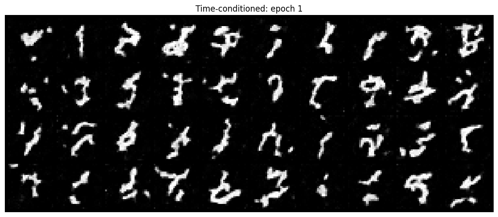
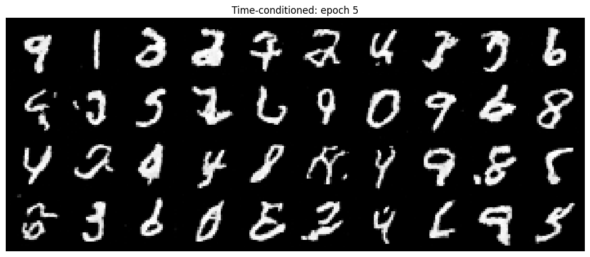
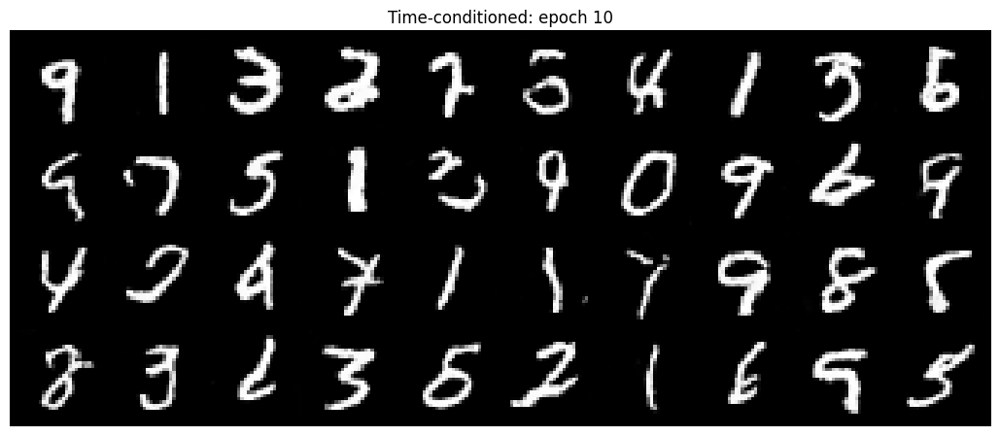
2.4 Adding Class Conditioning
I encoded each label as a one-hot vector and used two more fully connected blocks. At each conditioned layer, I combined the embeddings as class_embedding × features + time_embedding. I set the class vector to zero for 10% of training examples so the model also learns an unconditional prediction.
2.5 Training the Class-Conditioned Model
I kept the same width, batch size, optimizer, and 10-epoch learning-rate schedule as the time-only model. The loss falls quickly and then levels off.
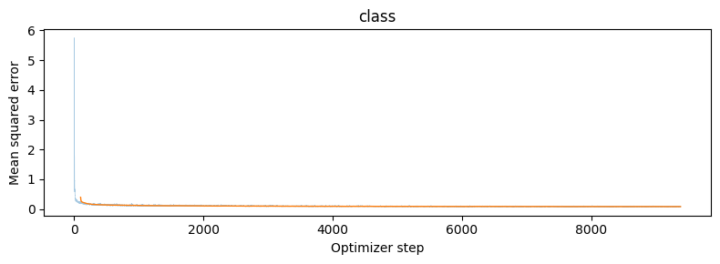
2.6 Class-Conditioned Sampling
I used 300 Euler steps and guidance vᵤ + 5(v꜀ − vᵤ). Each column is a digit from 0 to 9, with four examples per digit. The classes are already recognizable after epoch 1, and the later samples have cleaner strokes than the time-only model.
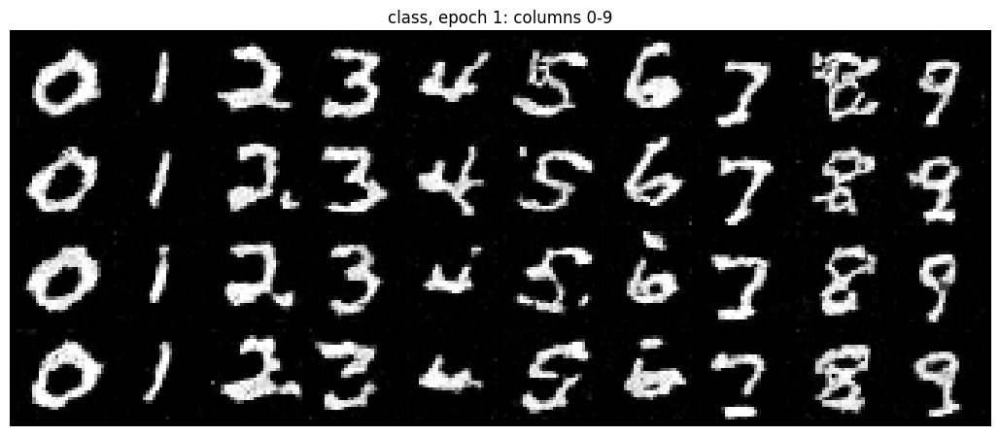
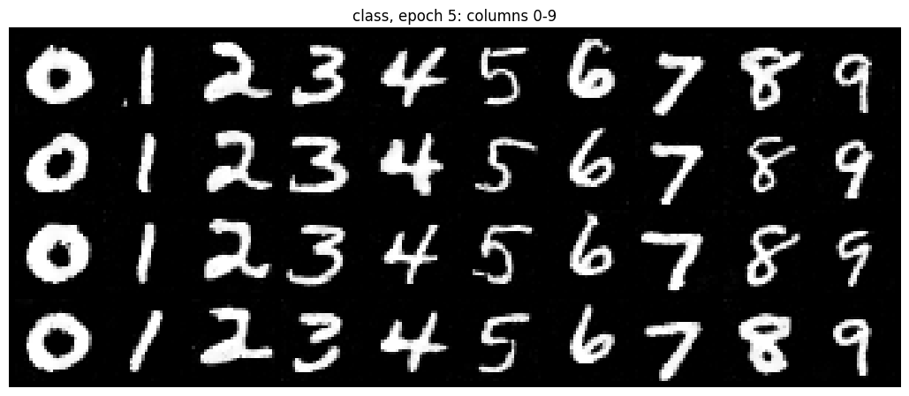
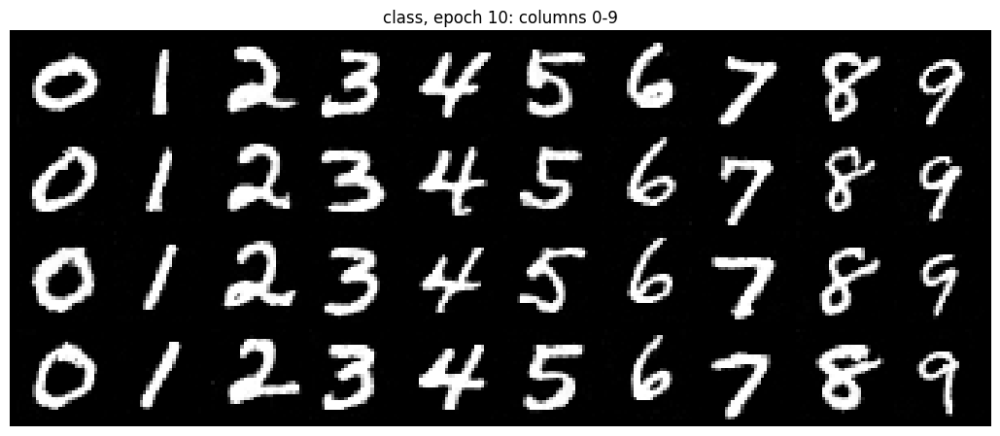
Removing the Learning-Rate Scheduler
I trained a separate model for 10 epochs with a constant learning rate of 0.001 instead of starting at 0.01 and decaying it. The smaller fixed steps avoid keeping the learning rate too large late in training. I used the same initialization, data order, and sample seeds for both runs.
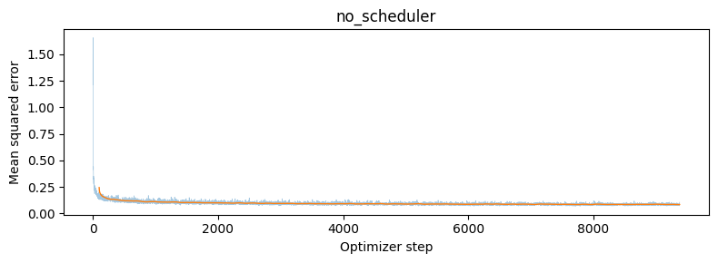
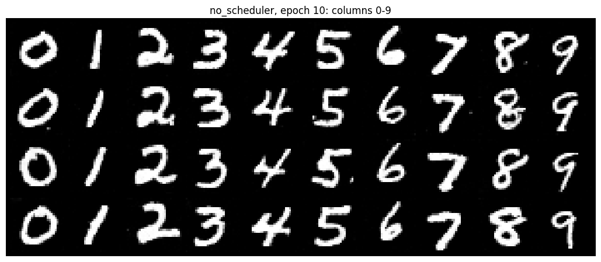
The fixed-rate results look about as readable as the scheduled results above. Both produce recognizable digits in the requested columns. There are small differences in stroke shape and thickness, but I don’t see a clear quality drop from removing the scheduler in these samples.